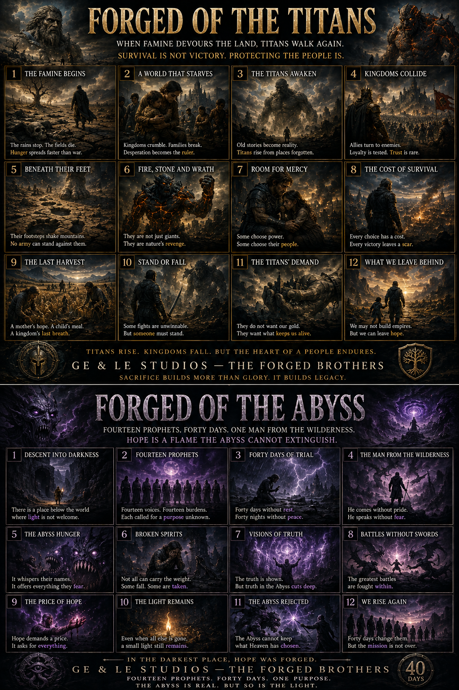
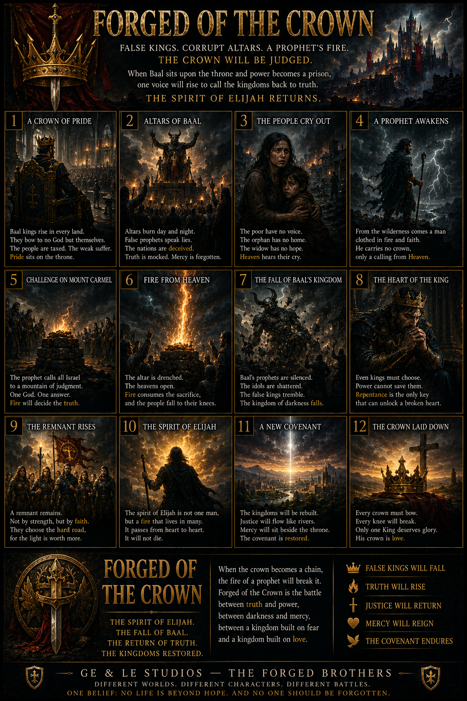
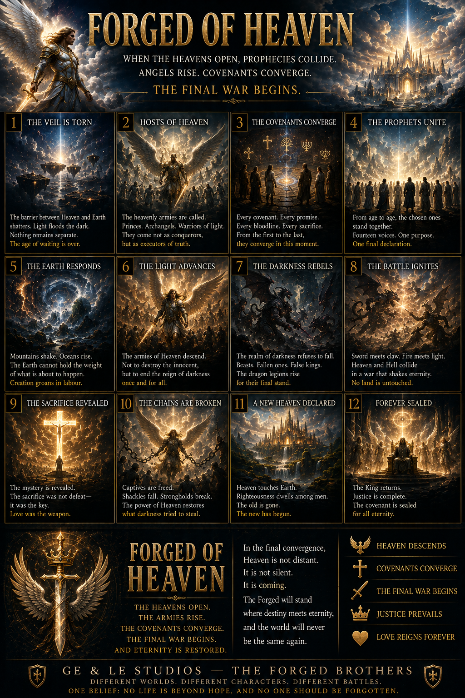

Bringing War Home
Some wounds never leave.
GE & LE Studios — The Forged Brothers
Mercy. Grace. Hope. Faith. Second chances. From the page to the screen, stories that remind us no one is beyond redemption.
Start watching
Four glimpses into the stories and values behind GE & LE Studios.
Some wounds never leave.
Mercy changes everything.
No race. No colour. No religion. Just people.
A love that lives beyond loss.
What we stand for
Our stories explore mercy, grace, hope, faith and second chances. Through worlds both familiar and extraordinary, we return to one belief: every life matters.
From script to screen
Meet the characters and worlds behind our cinematic storyboards. Select a production to explore its visual journey.
Film concept
When ancient power awakens, loyalty and sacrifice are tested.
Explore the storyboards ↓Film concept
A wounded man. A world at war. A journey toward home.
Explore the storyboards ↓Film concept
A soldier carries the war home, unaware of the truth awaiting him.
Explore the storyboards ↓Film concept
Two hearts, an ancient music box, and a love that crosses centuries.
Explore the storyboards ↓Explore the scenes
Browse by production. Select an image for a spoiler-free introduction and a closer look at the artwork.

Forged of the Abyss — Into darknessRead story & view artwork ↗
Forged of the Crown — Kingdoms at a crossroadsRead story & view artwork ↗
Forged of the Heavens — The final struggleRead story & view artwork ↗The Forged Saga — Connected by hopeRead story & view artwork ↗The Music of the Forged SagaRead story & view artwork ↗These images await final production and scene identification.
 Cinematic concept — Beyond the veilRead story & view artwork ↗
Cinematic concept — Beyond the veilRead story & view artwork ↗ Cinematic concept — The wider sagaRead story & view artwork ↗Action study — A moment of conflictRead story & view artwork ↗Battle study — The cost of conflictRead story & view artwork ↗Stories — Lives worth tellingRead story & view artwork ↗
Cinematic concept — The wider sagaRead story & view artwork ↗Action study — A moment of conflictRead story & view artwork ↗Battle study — The cost of conflictRead story & view artwork ↗Stories — Lives worth tellingRead story & view artwork ↗Listen
The music behind the worlds.
Where the story began
The Forged cinematic universe began with stories on the page. Explore the books, meet the characters and discover where each journey starts.